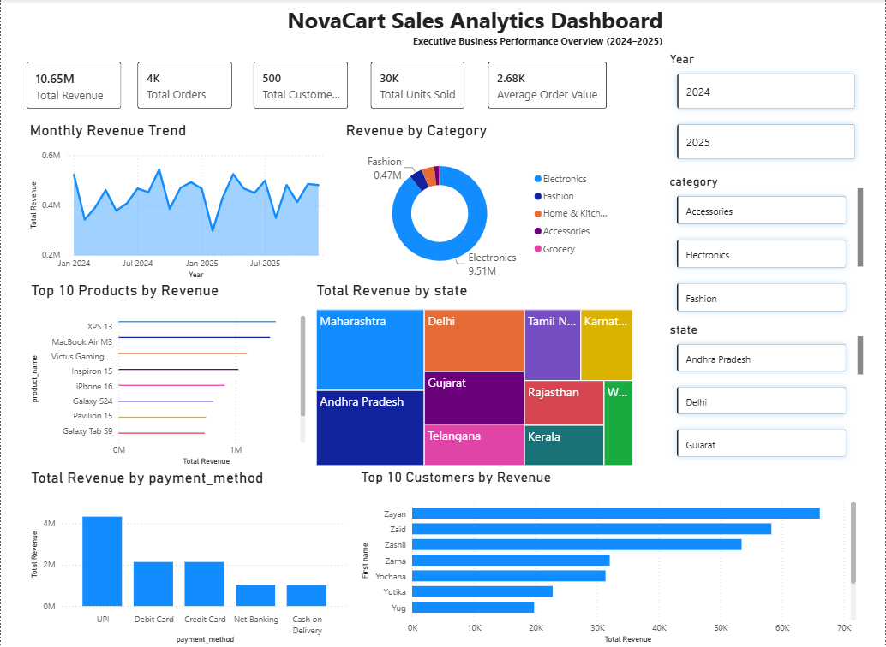

Revenue
What drives sales performance and revenue growth?
From business questions to actionable insights through SQL and Power BI.

NovaCart is an end-to-end e-commerce analytics case study built to understand sales performance, customer behavior, product demand, and payment performance.
The project begins with business-driven SQL analysis and transforms the findings into an interactive Power BI reporting experience.
NovaCart had transactional data across customers, products, orders, order items, and payments — but raw transactions alone don't answer the questions the business cares about.
What drives sales performance and revenue growth?
Who are the highest-value customers?
Which products and categories drive revenue?
Which payment methods perform best?
It allowed the transactional data to be joined, transformed, and aggregated into meaningful business metrics — creating the evidence needed before moving into Power BI.
A structured analytical pipeline connecting transactional data, SQL analysis, business insights, and interactive reporting.
Customers · Products · Orders · Payments
Structured relational transaction data.
Joins · CTEs · Aggregations · Window Functions
Revenue · Customers · Products · Payments
KPIs · Visuals · Filters · Interactive Reporting
Recommendations · Business Actions
Every analysis began with a business question, translated into an analytical approach, and answered using SQL-driven evidence.
Measure monthly revenue from successful transactions to identify changes in sales performance over time.
-- Replace with your exact Q1 query
SELECT
DATE_FORMAT(o.order_date, '%Y-%m') AS month,
SUM(oi.quantity * oi.unit_price) AS revenue
FROM orders o
JOIN order_items oi
ON o.order_id = oi.order_id
JOIN payments p
ON o.order_id = p.order_id
WHERE p.payment_status = 'Success'
GROUP BY month
ORDER BY month;
Rank monthly revenue to isolate the strongest and weakest sales periods.
-- Replace with your exact Q2 query
SELECT
DATE_FORMAT(o.order_date, '%Y-%m') AS month,
SUM(oi.quantity * oi.unit_price) AS revenue
FROM orders o
JOIN order_items oi
ON o.order_id = oi.order_id
JOIN payments p
ON o.order_id = p.order_id
WHERE p.payment_status = 'Success'
GROUP BY month
ORDER BY revenue DESC;
Aggregate successful transaction revenue by product category.
-- Replace with your exact Q3 query
SELECT
pr.category,
SUM(oi.quantity * oi.unit_price) AS revenue
FROM products pr
JOIN order_items oi
ON pr.product_id = oi.product_id
JOIN orders o
ON oi.order_id = o.order_id
JOIN payments p
ON o.order_id = p.order_id
WHERE p.payment_status = 'Success'
GROUP BY pr.category
ORDER BY revenue DESC;
Calculate customer revenue and classify customers into revenue-based segments for category-level comparison.
-- Replace with your exact Customer Q1 query
WITH customer_revenue AS (
SELECT
c.customer_id,
c.customer_name,
SUM(oi.quantity * oi.unit_price) AS revenue
FROM customers c
JOIN orders o
ON c.customer_id = o.customer_id
JOIN order_items oi
ON o.order_id = oi.order_id
GROUP BY
c.customer_id,
c.customer_name
)
SELECT
customer_name,
revenue,
CASE
WHEN revenue >= 20000
THEN 'High'
WHEN revenue >= 15000
THEN 'Medium'
ELSE 'Low'
END AS segment
FROM customer_revenue;
Compare each customer's purchase date with their previous purchase to identify repeat behavior within 90 days.
-- Replace with your exact Customer Q2 query
WITH purchase_history AS (
SELECT
o.customer_id,
o.order_date,
LAG(o.order_date)
OVER (
PARTITION BY o.customer_id
ORDER BY o.order_date
) AS previous_purchase
FROM orders o
)
SELECT
customer_id,
order_date,
previous_purchase,
DATEDIFF(
order_date,
previous_purchase
) AS days_since_previous
FROM purchase_history
WHERE
previous_purchase IS NOT NULL
AND
DATEDIFF(
order_date,
previous_purchase
) <= 90;
Compare product revenue and sales volume against their respective averages to classify product performance.
-- Replace with your exact Product Q5 query
WITH product_metrics AS (
SELECT
pr.product_name,
SUM(
oi.quantity * oi.unit_price
) AS revenue,
SUM(
oi.quantity
) AS units_sold
FROM products pr
JOIN order_items oi
ON pr.product_id = oi.product_id
GROUP BY
pr.product_id,
pr.product_name
),
averages AS (
SELECT
AVG(revenue) AS avg_revenue,
AVG(units_sold) AS avg_units
FROM product_metrics
)
SELECT
pm.*,
CASE
WHEN revenue > avg_revenue
AND units_sold < avg_units
THEN 'Premium Product'
WHEN units_sold > avg_units
AND revenue < avg_revenue
THEN 'High Volume Product'
ELSE 'Normal'
END AS product_type
FROM product_metrics pm
CROSS JOIN averages;
Compare monthly product revenue with the previous period and classify the resulting trend.
-- Replace with your exact Product Q6 query
WITH monthly_sales AS (
SELECT
pr.product_id,
pr.product_name,
DATE_FORMAT(
o.order_date,
'%Y-%m'
) AS month,
SUM(
oi.quantity * oi.unit_price
) AS revenue
FROM products pr
JOIN order_items oi
ON pr.product_id = oi.product_id
JOIN orders o
ON oi.order_id = o.order_id
GROUP BY
pr.product_id,
pr.product_name,
month
),
trend AS (
SELECT
*,
LAG(revenue)
OVER (
PARTITION BY product_id
ORDER BY month
) AS previous_revenue
FROM monthly_sales
)
SELECT
*,
ROUND(
(revenue - previous_revenue)
/ previous_revenue * 100,
2
) AS growth_rate
FROM trend;
Rank payment methods independently within each customer state to identify the dominant regional preference.
-- Replace with your exact Payment Q4 query
WITH payment_counts AS (
SELECT
c.state,
p.payment_method,
COUNT(*) AS payment_count
FROM customers c
JOIN orders o
ON c.customer_id = o.customer_id
JOIN payments p
ON o.order_id = p.order_id
GROUP BY
c.state,
p.payment_method
)
SELECT
state,
payment_method,
payment_count,
RANK() OVER (
PARTITION BY state
ORDER BY payment_count DESC
) AS preference_rank
FROM payment_counts;
The queries were not written as isolated SQL exercises. Each one was designed to answer a specific business question and produce evidence that could support a decision.
The SQL analysis transformed raw transaction data into measurable patterns across revenue, products, customers, and payments.
Electronics generated ₹9.51M in revenue, significantly exceeding every other product category in the dataset.
Revenue is heavily concentrated in one category, creating both a growth opportunity and a dependency risk.
Monthly revenue reached ₹543,139.94 at its highest point before declining to ₹296,727.17 in February 2025.
BUSINESS SIGNAL Demand varies significantly across periods.UPI contributed ₹4,335,801.86 in successful transaction revenue, making it the dominant payment method.
BUSINESS SIGNAL Digital payments represent a major customer preference.Comparing revenue against unit volume revealed products that generate strong revenue without necessarily having the highest sales volume.
BUSINESS SIGNAL High-value products deserve a different strategy from high-volume products.Previous purchase dates were compared with subsequent orders to identify customers returning within the defined 90-day retention window.
BUSINESS SIGNAL Transaction history can reveal retention behavior.SQL answered the business questions. Power BI transformed those results into reusable metrics and an interactive analytical layer.
Revenue, customer, product and payment questions were answered directly from transactional data.
Customers, orders, order items, products and payments were connected through business relationships.
Reusable measures converted raw transactions into business KPIs and analytical metrics.
KPIs, trends and category-level patterns became interactive and decision-ready.
The model connects customers, orders, products, order items and payments so analytical measures can flow across the entire e-commerce dataset.
[Total Revenue]
[Average Order Value]
[Revenue per Customer]
[Revenue Growth %]
[Payment Success Rate]
[Repeat Customers]
An interactive Power BI report bringing together sales, customer, product and payment analysis into one decision-ready view.
From transactional data to an interactive business intelligence layer.
The analysis points toward practical actions across category strategy, customer growth, product planning and payments.
Electronics contributes the majority of revenue. Continue investing in high-performing products while gradually expanding other categories to reduce revenue concentration.
Revenue varies considerably across periods. Use historical peaks and weaker periods to time promotions, campaigns and inventory planning more effectively.
Products with high unit volume are not always the strongest revenue contributors. Evaluate products using both sales volume and revenue before deciding where to promote or invest.
Identify returning customers and use their purchasing patterns to develop targeted offers, cross-selling opportunities and retention campaigns.
UPI is the strongest payment channel in the analyzed data. Maintaining a smooth digital payment experience can support conversion and customer convenience.
The Power BI layer should be used continuously to monitor revenue, customers, products and payments instead of treating the analysis as a one-time report.
It turns data into decisions.